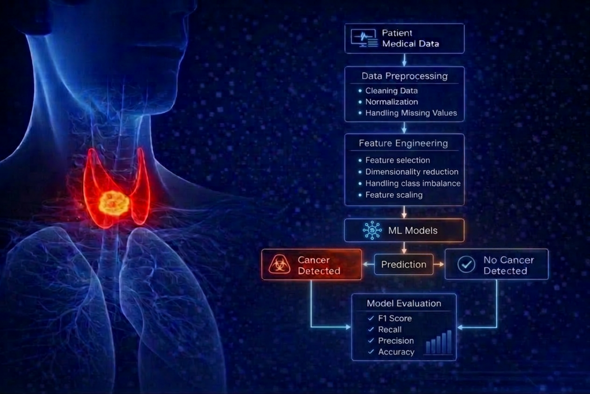

Evaluated 11 machine learning models to predict thyroid cancer risk. Leveraged PCA and SMOTE to handle imbalanced data,
with the final Random Forest model emerging as the top performer at 83% accuracy.

Transformed decades of historical election data into an accessible, interactive visual narrative.

An R-based data pipeline that scrapes and analyzes publication trends from scientific journal metadata.

Implemented and benchmarked Random Forest, Naive Bayes, and LSTM neural networks in Python to optimize classification workflows.
An interactive, visually-driven simulation of the classic Wumpus World AI problem featuring player control and A* pathfinding.

Implemented Apriori and FP-Growth association rule mining algorithms to generate frequent itemsets from custom retail data.